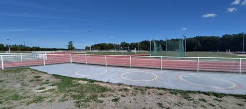
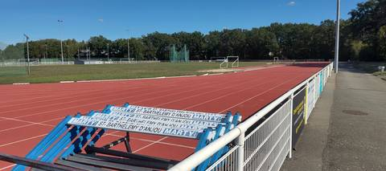

{kind=link}
{kind=link}
Piste exceptionnelle, un lieu rêvé pour s'entraîner : tous les agrès d'athlétisme sont réunis sur le même site. Seul regret, et de taille : l'accès n'est pas libre en continu. J'y suis allé dans le cadre d'une formation de juges de sauts, et le site n'est pas ouvert tout le temps — le samedi par exemple, il ferme dès 12h30.
Complexe Sportif de la Venaiserie
11 rue François Mauriac, 49124 Saint-Barthélemy-d'Anjou · Maine-et-Loire
Complexe Sportif de la Venaiserie is an athletics venue in Saint-Barthélemy-d'Anjou (Maine-et-Loire), Pays de la Loire, France. It has a 400 m synthetic (tartan) running track with 6 lanes. It also offers steeplechase, long jump pit, triple jump, high jump area, pole vault, shot put, discus, hammer throw and javelin. The venue provides floodlighting, changing rooms and showers.
Photos


A photo is surely still missing
Jump pits and throwing areas are what public data describes worst, and what gets photographed least. A close-up of the ground, a covered vault pit, a sand box gone to weeds: each adds what no field carries.
Send a photoNo GitHub account?Track
- Surface
- Synthetic (tartan)
- Lap length
- 400 m
- Track type
- Athletics stadium oval
- Lanes
- 6
- Setting
- Outdoor
- Opened
- 1983
- Last refurbished
- 2004
Recorded facilities
- Steeplechase
- Long jump pit
- Triple jump
- High jump area
- Pole vault
- Shot put
- Discus
- Hammer throw
- Javelin
Access & amenities
- Free access
- No / members only
- Floodlighting
- Yes
- Changing rooms
- Yes
- Showers
- Yes
- Toilets
- Yes
Visite du 12 septembre 2026, dans le cadre d'une formation de juges de sauts : l'accès n'a été expérimenté que dans ce cadre-là, pas en accès libre spontané. Le site n'est pas ouvert en continu — par exemple le samedi il ferme dès 12h30. Aucun panneau d'horaires complet relevé sur place.
Athlete reviews
Visite du 12 septembre 2026, à l'occasion d'une formation de juges de sauts. Piste complète en synthétique (tartan) : tous les agrès d'athlétisme sont présents et ont été vus sur place — longueur, triple saut, hauteur, perche, poids, disque, marteau, javelot et rivière de steeple. Le développement n'a pas été mesuré sur place. Le recensement l'annonce à 400 m, ce qui paraît cohérent avec l'aspect d'un anneau standard, mais ce chiffre reste celui du recensement, non vérifié ici. Les 6 couloirs restent également ceux déduits du tracé de l'anneau dans OpenStreetMap (r12497607), non comptés sur place.
Other venues in the department
- ensemble scolaire Saint Aubin la Salle
- Ecole élémentaire Isoret
- Stade de l'Arceau / Château de l'Arceau
- Parc des Sports de la Goducière
- COSEC Debussy
- Ecole élémentaire Henri Chiron
Report an error or complete this record
Réf. I492670013 · Source: Data ES + community — Data ES, French ministry for sport, Licence Ouverte 2.0. Records are self-declared and may be incomplete: check access conditions before travelling.